상품정보
상품코드 : 19970731
배송정보 : 해당 브랜드 제품으로만 50000원 이상 구매시 무료배송 (미만시 배송비 2500원 발생)
제주도를 포함한 도서/산간 지역은 추가배송비 3000원
천연 유/수분 보호막이 없고 부실한 각질층으로 연약하기 그지없는 입술
차가운 바람이나 강렬한 자외선 담배의 니코틴,뜨겁거나 차갑고 매운 음식물, 물어뜯는 습관 등
온갖 시련을 견디고 있는 여러분의 입술을 수분가득 "CHUCHUCHU"로 지켜주세요.
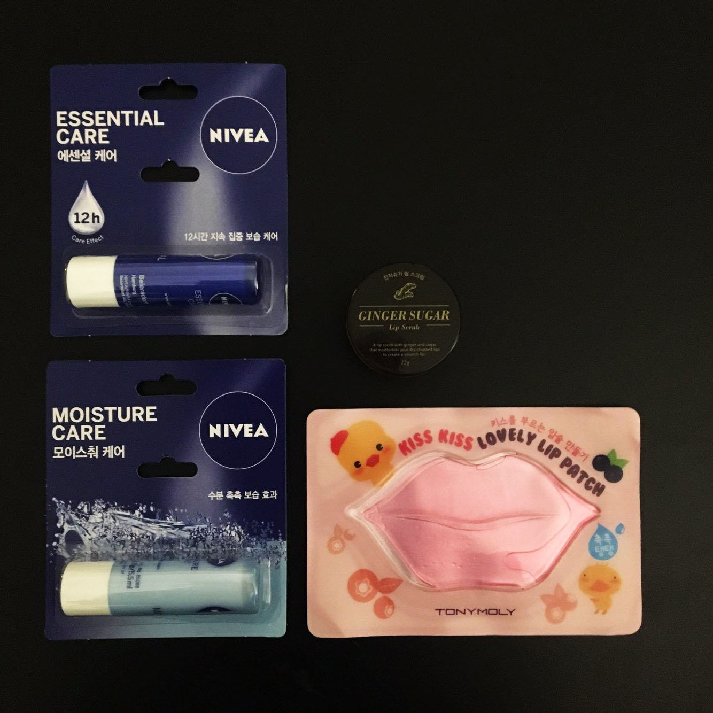
총 4개의 구성품으로 이루어져 있습니다.
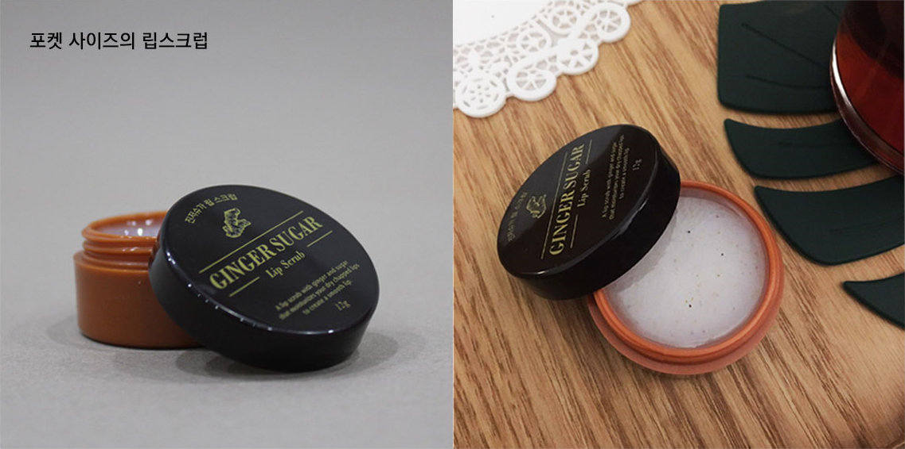
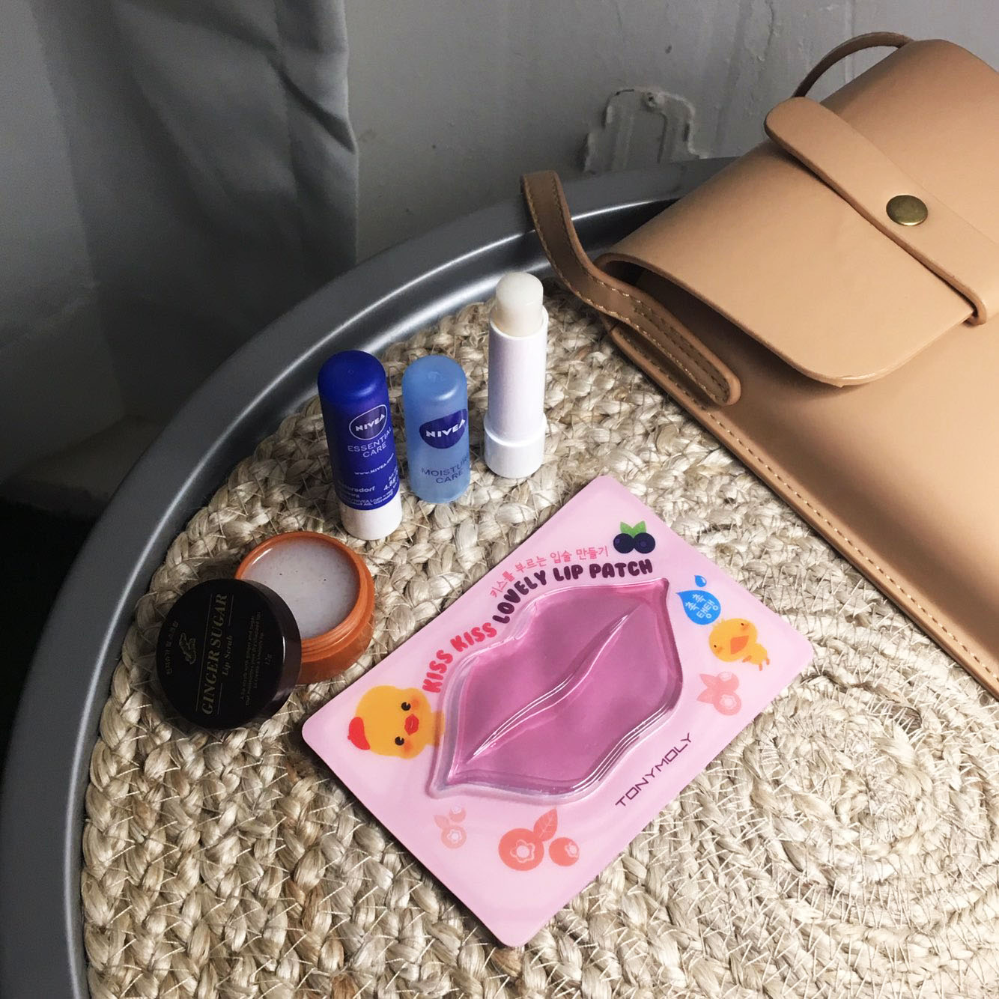
미니 사이즈의 가방에도 아주 넉넉히 들어가는 크기의 구성품입니다.
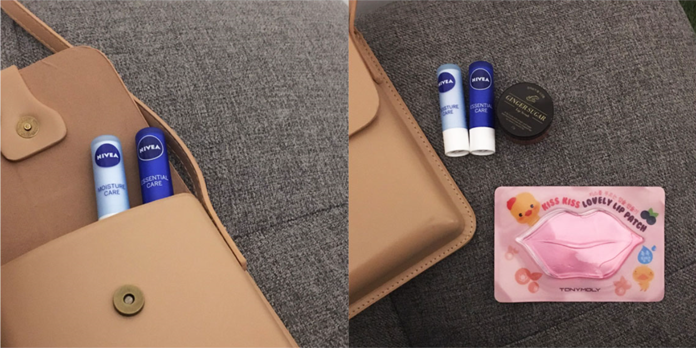천연 유래 슈가 알갱이와 호두껍질 가루가 묵은 각질을 깔끔하게 제거해줍니다.
소중한 입술 피부를 위한 인공향과 합성색소가 배제된 처방입니다.
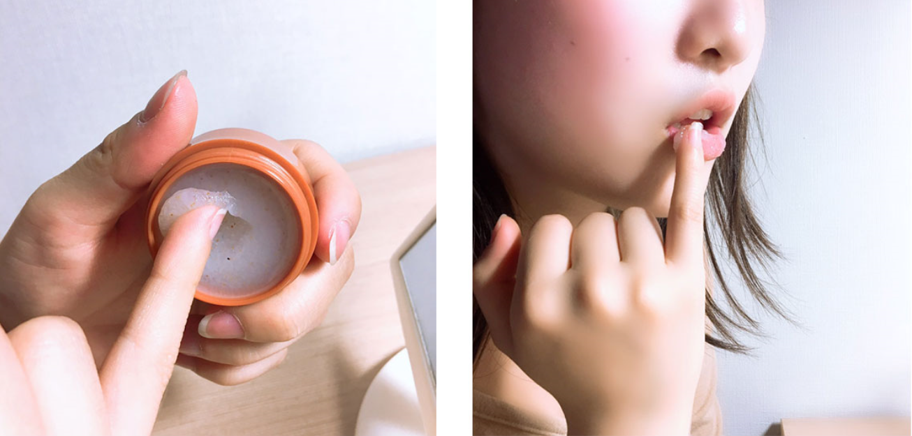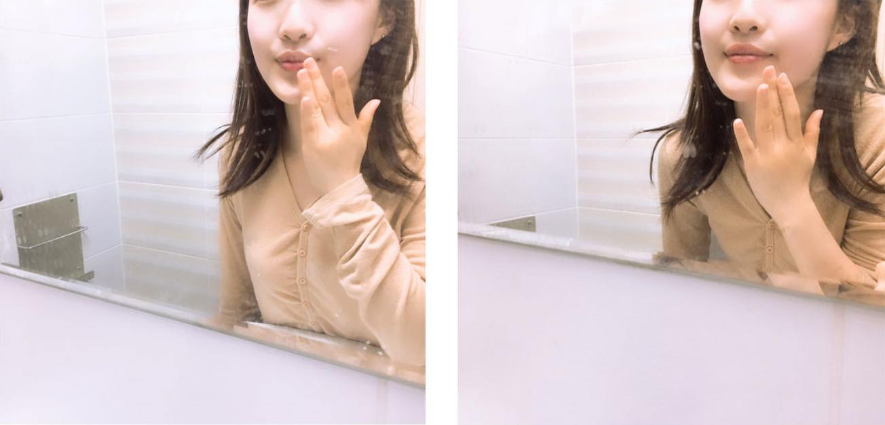
비타민 C가 풍부한 베리 러블리 콤플렉스가 함유되어 있어
건조하고 생기 없는 입술을 촉촉하고 탱탱하게 가꿔주는 립 패치입니다.
에센스가 굳은 하이드로겔 타입의 시트팩이며 뛰어난 밀착력과 쿨링감을 주고
넓은 사이즈로 입주변 튼살까지 케어할 수 있습니다.
롱래스팅 처방의 보습보호막이 입술의 수분 보유력을 높여주고
진한 보습과 영양을 주어 하루종일 촉촉하고 부드러운 입술로 가꾸어줍니다.
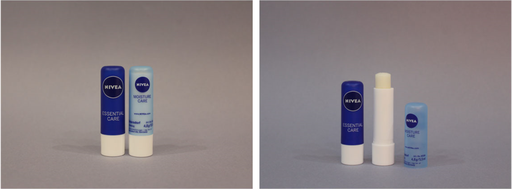
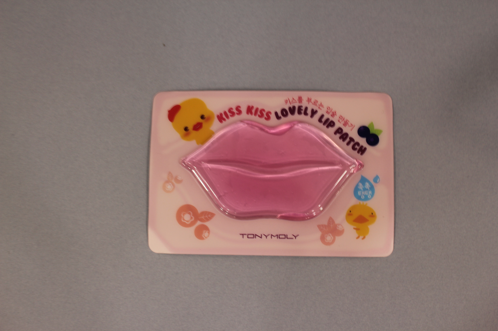
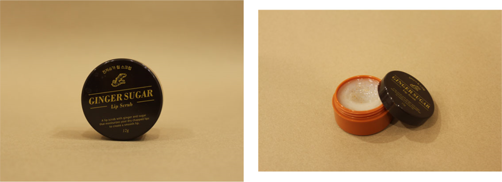
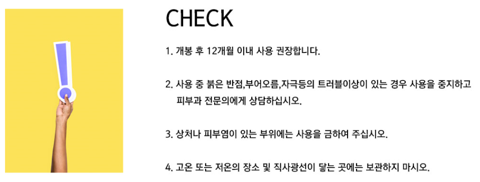
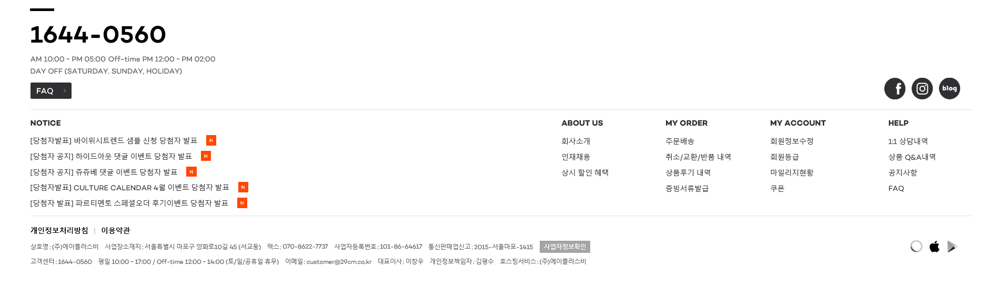